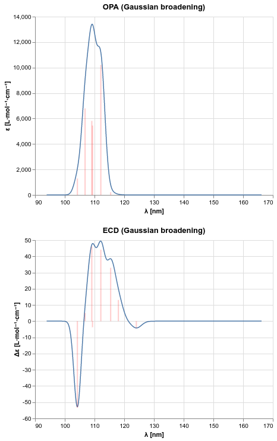

TDSCF: Time-dependent Hartree–Fock and density-functional theory¶
Code author: Andrew M. James, Daniel G. A. Smith, Ruhee Dcuhna, Roberto Di Remigio and Jeff Schriber
Section author: Roberto Di Remigio
Module: Keywords, PSI Variables, LIBSCF_SOLVER
Introduction¶
PSI4 provides the capability to calculate excitation energies and ground to excited state transition properties for SCF reference wavefunctions in a linear response formalism [Dreuw2005-wp].
An illustrative example of using the TDSCF functionality is as follows:
molecule {
0 1
O 0.000000 0.695000 -0.092486
O -0.000000 -0.695000 -0.092486
H -0.388142 0.895249 0.739888
H 0.388142 -0.895249 0.739888
symmetry c1
}
set {
tdscf_states 10
}
energy('td-scf/cc-pvdz')
This will seek to converge 10 singlet roots from a restricted Hartree–Fock reference. The roots are obtained with an iterative eigensolver and the following is the printout from the calculation:
---------------------------------------------------------
TDSCF excitation energies
by Andrew M. James and Daniel G. A. Smith
---------------------------------------------------------
==> Options <==
Residual threshold : 1.0000e-04
Initial guess : denominators
Reference : RHF
Solver type : RPA (Hamiltonian)
==> Requested Excitations <==
10 singlet states with A symmetry
==> Seeking the lowest 10 singlet states with A symmetry
Generalized Hamiltonian Solver
By Andrew M. James
==> Options <==
Max number of iterations = 60
Eigenvector tolerance = 1.0000e-04
Max number of expansion vectors = 2000
=> Iterations <=
Max[D[value]] Max[|R|] # vectors
HamiltonianSolver iter 1: 5.64572e-01 3.65441e-01 40
HamiltonianSolver iter 2: 1.70649e-02 4.40807e-02 60
HamiltonianSolver iter 3: 2.42552e-04 6.95387e-03 80
HamiltonianSolver iter 4: 2.34146e-06 7.75689e-04 100
HamiltonianSolver iter 5: 1.75483e-08 6.17293e-05 120 Converged
When convergence is reached, PSI4 will output a report of excitation energies, oscillator strengths, and rotatory strenghts in atomic units:
Excitation Energy Total Energy Oscillator Strength Rotatory Strength
# Sym: GS->ES (Trans) au eV au au (length) au (velocity) au (length) au (velocity)
---- -------------------- --------------- --------------- --------------- --------------- --------------- --------------- ---------------
1 A->A (1 A) 0.26945 7.33199 -150.50964 0.0017 0.0082 -0.0019 -0.0135
2 A->A (1 A) 0.31534 8.58073 -150.46375 0.0000 0.0002 -0.0007 -0.0096
3 A->A (1 A) 0.35760 9.73076 -150.42148 0.0040 0.0097 0.0227 0.0352
4 A->A (1 A) 0.37522 10.21028 -150.40386 0.0144 0.0442 0.0729 0.1223
5 A->A (1 A) 0.43252 11.76960 -150.34656 0.0890 0.1189 -0.1942 -0.2491
6 A->A (1 A) 0.46952 12.77624 -150.30957 0.0640 0.1157 0.0175 0.0235
7 A->A (1 A) 0.49186 13.38426 -150.28722 0.0016 0.0012 -0.0243 -0.0212
8 A->A (1 A) 0.50405 13.71581 -150.27504 0.4557 0.4396 -0.0197 -0.0158
9 A->A (1 A) 0.52971 14.41407 -150.24938 0.0799 0.0948 0.0546 0.0595
10 A->A (1 A) 0.56083 15.26092 -150.21825 0.0497 0.0567 -0.0587 -0.0650
The solvers can be used to extract the first few roots of interest for the full time-dependent DFT (TDDFT) equations, also known as the random-phase approximation (RPA), or its Tamm–Dancoff approximation. The former is a generalized eigenvalue problem and our solver leverages the Hamiltonian structure of the equations to ensure robust convergence [stratmann:1998]. The latter is a Hermitian eigenvalue problem and we employ a Davidson solver.
Known limitations¶
Warning
The implementation cannot currently handle the following cases: - Functionals with meta or VV10 components.
Warning
The length-gauge rotatory strengths PSI4 computes are currently not gauge-origin invariant.
Theory¶
The excitation energies and corresponding states are obtained from the following generalized eigenvalue problem, also known as the response eigenvalue problem:
This approach has the advantage that there is no need to explicitly parametrize the wavefunctions of the molecular excited states. Furthermore, the excitation eigenvectors, \((\mathbf{X}_{n} \mathbf{Y}_{n})^{t}\), provide information on the nature of the transitions and can be used to form spectroscopic observables, such as oscillator and rotatory strengths.
The \(\mathbf{A}\) and \(\mathbf{B}\) matrices appearing on the left-hand side are the blocks of the molecular electronic Hessian, [Norman2018-tn] whose dimensionality is \((OV)^{2}\), with \(O\) and \(V\) the number of occupied and virtual molecular orbitals, respectively. This prevents explicit formation of the full Hessian, and subspace iteration methods need to be used to extract the first few roots. In such methods, the eigenvectors are expanded in a subspace of trial vectors, whose dimensionality is greatly lower than that of the full eigenproblem. The Hessian is projected down to this subspace where conventional full diagonalization algorithms can be applied. The subspace is augmented with new trial vectors, until a suitable convergence criterion is met. The efficiency of the subspace solver is determined by the first half-projection of the Hessian in the trial subspace, that is, by the efficiency of the routines performing the matrix-vector products.
It is essential to note that, despite the hermiticity of the molecular electronic Hessian, the response eigenvalue equation is not an Hermitian eigenproblem, due to the nonunit metric on the right-hand side. Indeed the Davidson solver, the standard subspace iteration method in quantum chemistry, demonstrates very poor convergence, sometimes manifesting as spurious complex eigenvalues. The eigenproblem however has Hamiltonian symmetry: the roots appear in pairs \((\omega_{n}, -\omega_{n})\), as do the eigenvectors. A robust subspace solver should preserve the Hamiltonian symmetry, by enforcing the paired structure on the trial vectors themselves. Since PSI4 employs real orbitals, the response eigenproblem can be brought to the form:
and further to the Hermitian form:
assuming the SCF reference is stable, i.e. \((\mathbf{A}-\mathbf{B})\) is positive-definite. The paired vectors \(| \mathbf{X}_{n} - \mathbf{Y}_{n}\rangle\) are left eigenvectors and form a biorthonormal set together with the right eigenvectors \(| \mathbf{X}_{n} + \mathbf{Y}_{n}\rangle\).
The algorithm for the subspace iteration Hamiltonian solver implemented in PSI4 was first described by Stratmann et al. [stratmann:1998]. As already mentioned, the formation and storage of the matrix-vector products \((\mathbf{A}+\mathbf{B})\mathbf{b}_{i}\) and \((\mathbf{A}-\mathbf{B})\mathbf{b}_{i}\) for all trial vectors \(\mathbf{b}_{i}\) are the most compute- and memory-intensive operations in the Hamiltonian solver. These matrix-vector products are equivalent to building generalized Fock matrices and thus use the efficient \(JK\) build infrastructure of PSI4.
The excitation energies and eigenvectors can then be used to compute transition moments, such as electric and magnetic transition dipole moments, and spectroscopic intensities, such as oscillator strengths and rotatory strengths [Pedersen1995-du], [Lestrange2015-xn]. For example, PSI4 will compute compute oscillator strengths from the MO basis electric dipole moment integrals, \(\mathbf{\mu}_{u}\), and the right excitation vectors, \(|\mathbf{X}_{n}+\mathbf{Y}_{n}\rangle\):
Psithon keywords¶
TDSCF_STATES¶
Number of roots (excited states) we should seek to converge. This can be either an integer (total number of states to seek) or a list (number of states per irrep). The latter is only valid if the system has symmetry. Furthermore, the total number of states will be redistributed among irreps when symmetry is used.
Type: array
Default: No Default
TDSCF_TRIPLETS¶
Controls inclusion of triplet states, which is only valid for restricted references. Valid options: - none : No triplets computed (default) - also : lowest-energy triplets and singlets included, in 50-50 ratio. Note that singlets are privileged, i.e. if seeking to converge 5 states in total, 3 will be singlets and 2 will be triplets. - only : Only triplet states computed
Type: string
Possible Values: NONE, ALSO, ONLY
Default: NONE
TDSCF_TDA¶
Run with Tamm-Dancoff approximation (TDA), uses random-phase approximation (RPA) when false
Type: boolean
Default: false
TDSCF_R_CONVERGENCE¶
Convergence threshold for the norm of the residual vector. If unset, default based on D_CONVERGENCE
Type: conv double
Default: 1e-4
TDSCF_MAXITER¶
Maximum number of TDSCF solver iterations
Type: integer
Default: 60
TDSCF_GUESS¶
Guess type, only ‘denominators’ currently supported
Type: string
Default: DENOMINATORS
TDSCF_PRINT¶
Verbosity level in TDSCF
Type: integer
Default: 1
TDSCF_COEFF_CUTOFF¶
Cutoff for printing excitations and de-excitations contributing to each excited state
Type: double
Default: 0.1
TDSCF_TDM_PRINT¶
Which transition dipole moments to print out: - E_TDM_LEN : electric transition dipole moments, length representation - E_TDM_VEL : electric transition dipole moments, velocity representation - M_TDM : magnetic transition dipole moments
Type: array
Default: No Default
PsiAPI usage¶
The TDSCF functionality is also accessible from PsiAPI. The example calculation shown above can be carried out as follows:
import psi4
from psi4.driver.procrouting.response.scf_response import tdscf_excitations
psi4.core.set_output_file("h2o2.out")
h2o2 = psi4.geometry("""0 1
O 0.000000 0.695000 -0.092486
O -0.000000 -0.695000 -0.092486
H -0.388142 0.895249 0.739888
H 0.388142 -0.895249 0.739888
symmetry c1
""", name="H2O2")
psi4.set_options({
'save_jk': True,
})
e, wfn = psi4.energy("HF/cc-pvdz", return_wfn=True, molecule=h2o2)
res = tdscf_excitations(wfn, states=10)
Plotting one-photon absorption and electronic circular dichroism spectra¶
Excitation energies and corresponding spectroscopic observables can be used to produce spectra for one-photon absorption (OPA) and electronic circular dichroism (ECD) with phenomenological line broadening.
PSI4 provides the spectrum function for this purpose implementing the
recommendations of Rizzo et al. [Rizzo2011-to].
This function will not plot the spectrum, but rather return a pair of NumPy
arrays containing the \(x\) and \(y\) values resulting from the
convolution with broadening of the computed spectroscopic observables.
import numpy as np
import psi4
from psi4.driver.procrouting.response.scf_response import tdscf_excitations
from psi4.driver.p4util import spectrum
psi4.core.set_output_file("moxy.out")
moxy = psi4.geometry("""0 1
C 0.152133 -0.035800 0.485797
C -1.039475 0.615938 -0.061249
C 1.507144 0.097806 -0.148460
O -0.828215 -0.788248 -0.239431
H 0.153725 -0.249258 1.552136
H -1.863178 0.881921 0.593333
H -0.949807 1.214210 -0.962771
H 2.076806 -0.826189 -0.036671
H 2.074465 0.901788 0.325106
H 1.414895 0.315852 -1.212218
""", name="(S)-methyloxirane")
psi4.set_options({
'save_jk': True,
})
e, wfn = psi4.energy("HF/cc-pvdz", return_wfn=True, molecule=moxy)
res = tdscf_excitations(wfn, states=8, triplets="also")
# get poles and residues to plot OPA and ECD spectra
poles = [r["EXCITATION ENERGY"] for r in res]
opa_residues = [np.linalg.norm(r["LENGTH-GAUGE ELECTRIC DIPOLE TRANSITION MOMENT"])**2 for r in res]
ecd_residues = [r["LENGTH-GAUGE ROTATORY STRENGTH"] for r in res]
opa_spectrum = spectrum(poles=poles, residues=opa_residues, gamma=0.01, out_units="nm")
ecd_spectrum = spectrum(poles=poles, residues=ecd_residues, kind="ECD", gamma=0.01, out_units="nm")
The data produced by running the above PsiAPI code can, for example, be used with the Altair plotting library to produce the desired spectra.

{kind=link}